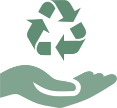
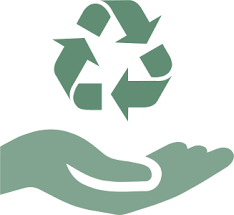

Writings
.jpg)
Don't Waste Electricity
.jpg)
Don't Waste Water
Reduse,Reuse,Recycle
.jpg)
Try To Drive Less
.jpg)
Don't Waste Food

Plant Trees
What does sustainability mean to you? In the past few years it’s become a buzzword alongside other vague terms like “green”, “eco-friendly” and “carbon footprint”. Sustainability is a key issue area for Global Citizen, and recently we’ve dedicated a significant amount of our content to talk about climate change.
But sustainability is about more than just combatting climate change, because climate change isn’t the only threat facing our planet. The human race has really messed things up, and only through strong commitments from the world at large can we hope to prevent further destruction.
Do I sound dramatic? Sorry. But this is serious stuff that shouldn’t be downplayed. Our planet is under attack- here are 6 environmental threats facing it now:
1. Climate change Heat waves, droughts, flooding, storms, decrease in crop yields, and rising sea levels are just some of the effects we’re seeing from climate change. Not fun.
2. Deforestation Deforestation is one cause of climate change. But beyond that, it’s also responsible for the depletion of oxygen in the atmosphere and the displacement of wildlife.
3. Pollution According to the World Health Organization, “air pollution is now the world’s largest single environmental health risk.” That’s because it’s responsible for approximately 3.7 million deaths a year (according to a 2012 study). There are other types of pollution too, like waste. Natalie Prolman notes that, “cities currently generate approximately 1.3 billion tonnes of solid waste per year….and with the current trends in urbanization, this number will likely grow to 2.2 billion tonnes per year by 2025 - an increase of 70 percent.” Pollution poisons soil and waterways, kills plants, and harms humans and animals. Plus, it’s just gross.
4. Loss of biodiversity As a result of overfishing, deforestation, habitat destruction, pollution, and other factors, more plants and animals are nearing extinction. Even the smallest disruption to an eco-system can have a domino effect that affects us all. Protecting bio-diversity is as much about protecting the cute endangered species you did your 6th grade report on as it is about self-preservation.
5. Oceanic dead zones Dead zones occur in the ocean when oxygen levels in the water fall until marine life cannot survive. Typically they pop up near heavily populated coastal regions like North America’s Gulf Coast where there are lots of chemicals in the water. If you’re a fan of seafood, fingers crossed your dinner didn’t come from one of these deadly zones, because even if marine life can still be sustained, the chemicals can get into the food you’re eating.
6. Overpopulation As the human population continues to grow, more stress is put on the environment and more resources are lost. No, I’m not talking about food- we actually have more than enough food to feed everybody. But as the population grows, more wilderness is taken over to make room for infrastructure, more “stuff” is produced, and more pollution is created.
7. Over-fishing For far too long we’ve taken the ocean for granted, discarding unwanted waste there and taking from it without considering the repercussions. Now, it’s pay day. Because of irresponsible fishing, many species of fish are on the brink of extinction. And as we’ve already covered, a loss in biodiversity means trouble for us all. So that’s scary. But here’s the good news- we have the chance to turn some of this around, and this is the time to do it..
Don't Waste Electricity
Don't Waste Water
Reduse,Reuse,Recycle
Try To Drive Less
Don't Waste Food
Plant Trees
WWF
Jane Goodall Institute
MyClimate
Climeworrks
1Point5